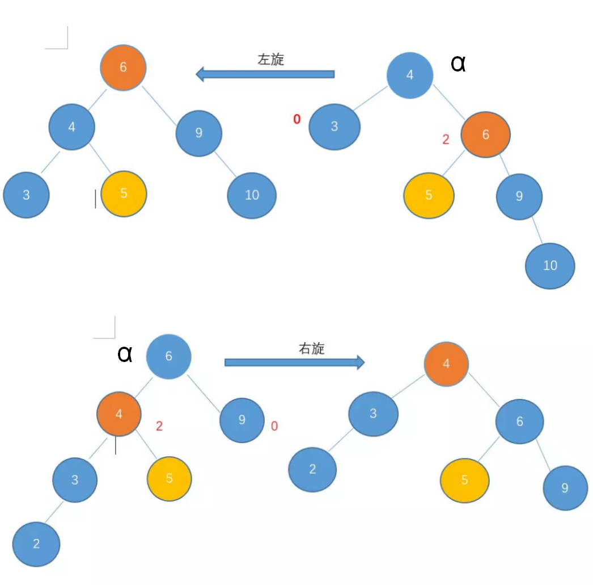
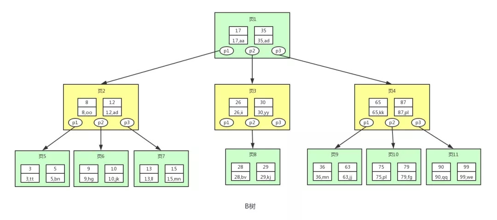
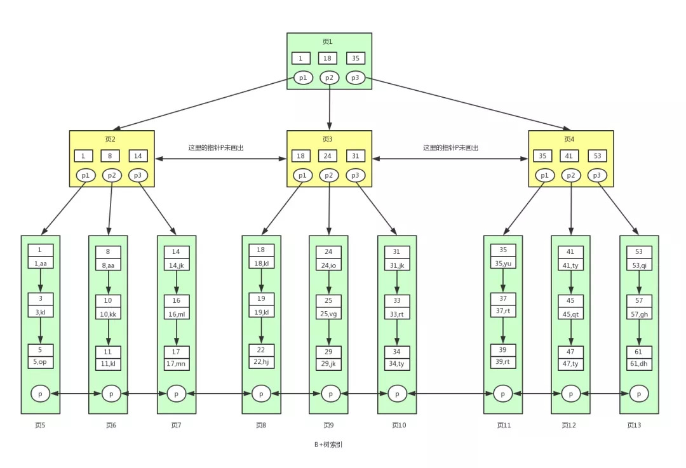

数据结构
树-基本概念
- 节点深度: 从根节点到该节点的唯一路径的长度
- 节点高：该节点到一个叶节点的最长路径的长度
- 树的深度等于树的高度，是根节点到其最深树叶的长度
- 满二叉树：除最后一层无任何子节点外，每一层上的所有结点都有两个子结点的二叉树。高度为h,则节点数N=2h+1-1; h=O(log N)
- 完全二叉树：一棵深度为k的有n个结点的二叉树，对树中的结点按从上至下、从左到右的顺序进行编号，如果编号为i（1≤i≤n）的结点与满二叉树中编号为i的结点在二叉树中的位置相同，则这棵二叉树称为完全二叉树。 高度h的完全二叉树，节点数2h<=N<=2h+1-1。
- 二叉查找树: 任何节点的左子节点的key值都小于当前节点的key，而右子节点的key都大于当前节点的key(这里key即是索引)；二叉查找树的平均高度为O(log N), N为节点个数；但如果对向一棵树输入预先排序的数据，此时二叉查找树会退化成单向链表，查找时间复杂度将变成O(N)。故引出平衡二叉树。
- 二叉树的前、中、后序遍历都可以通过栈来实现，时间复杂度O(N), 空间复杂度O(N); 若采用递归调用，额外的需要函数栈空间O(N);采用Morris遍历，可以将空间复杂度降到O(1)。
0、 记作当前节点为cur。 1、 1_1. 如果cur无左孩子，cur=cur.right, 直接到第3步 1_2. 如果cur有左孩子，找到cur左子树上最右的节点，记为mostright 2、 2_1. if(mostright.right==NULL), then mostright.right=cur, cur=cur.left 2_2. if(mostright.right==cur), then mostright.right=NULL, cur=cur.right 3、 重复1、2直至cur为空 4、 返回结果 前序遍历:在1_1步,把cur加入到结果后，cur=cur.right; 以及在2_1步, 先把cur加入到结果中, then cur=cur.left 中序遍历:在1_1步,把cur加入到结果后，cur=cur.right; 以及在2_2步, 先把cur加入到结果中, then cur=cur.right 后序遍历:在2_2这一步,将从cur的左节点到mostright节点路径上的所有节点倒序添加的结果中(通过下面的addPaths函数); 在4步, 结束循环后，此时只剩下最右侧一条路径上的所有节点(包括根节点)尚未添加到结果中。而层序遍历需要通过队列实现。
总结: 可以看出三种遍历，在morris算法下，有相同的结构， 区别在于添加结果的位置，以及后序遍历使需要额外的函数来倒序添加结果
#include<vector>
#include<stack>
#include<queue>
struct TreeNode {
int val;
TreeNode* left;
TreeNode* right;
TreeNode() : val(0), left(nullptr), right(nullptr) {}
TreeNode(int x) : val(x), left(nullptr), right(nullptr) {}
TreeNode(int x, TreeNode* left, TreeNode* right) : val(x), left(left), right(right) {}
};
class solution{
public:
//前序遍历
std::vector<int> preorderTraversal(TreeNode* root){
if(!root)return {};
std::vector<int> ans;
std::stack<TreeNode*> st;
while(root || !st.empty()){
while(root){
ans.push_back(root->val);
st.push(root);
root=root->left;
}
root = st.top()->right;
st.pop();
}
return ans;
}
//中序遍历
std::vector<int> inorderTraversal(TreeNode* root){
if(!root)return {};
std::vector<int> ans;
std::stack<TreeNode*> st;
while(root || !st.empty()){
while(root){
st.push(root);
root=root->left;
}
root=st.top();
st.pop();
ans.push_back(root->val);
root=root->right;
}
return ans;
}
//后序遍历, 除去递归，提供了4种方法，前三种都需要O(N)的空间复杂度, morris只需O(1)空间复杂度
std::vector<int> postorderTraversal(TreeNode* root){
if(!root)return {};
std::vector<int> ans;
std::stack<TreeNode*> st;
st.push(root);
TreeNode* cur;
while(!st.empty()){
cur=st.top();st.pop();
if(cur){
st.push(cur->left);
st.push(cur->right);
ans.push_back(cur->val); //访问顺序: 根、右、左，对结果逆序
}
}
std::reverse(ans.begin(), ans.end());
return ans;
}
std::vector<int> postorderTraversal2(TreeNode* root){
if(!root)return {};
std::vector<int> ans;
std::stack<std::pair<TreeNode*, bool>> st;
st.push(std::make_pair(root, false));
std::pair<TreeNode*, bool>* cur;
while (!st.empty())
{
cur = &st.top();
if(cur->second){//bool=true, 说明是子节点已经访问了
ans.push_back(cur->first->val);
st.pop();
}else{ //bool=false, 说明当前节点的子节点尚未访问，将右孩子和左孩子先后入栈
cur->second=true;
if(cur->first->right) st.push(std::make_pair(cur->first->right, false));
if(cur->first->left) st.push(std::make_pair(cur->first->left, false));
}
}
return ans;
}
std::vector<int> postorderTraversal3(TreeNode* root){
if(!root)return {};
std::vector<int> ans;
std::stack<TreeNode*> st;
TreeNode* prev;
while(root || !st.empty()){
while(root){
st.push(root);
root=root->left;
}
root = st.top();
if(!root->right || root->right==prev){
ans.push_back(root->val);
prev=root;
st.pop();
root=nullptr;
}else
root=root->right;
}
return ans;
}
//morros前序遍历
std::vector<int> preorderTraversal2(TreeNode* root){
if(!root)return {};
std::vector<int> ans;
TreeNode* cur=root, *next=nullptr;
while (cur)
{
next=cur->left;
if(next){
while(next->right && next->right!=cur)
next=next->right;
if(!next->right){
next->right=cur;
ans.push_back(cur->val);
cur=cur->left;
}else{
next->right=nullptr;
cur=cur->right;
}
}else
{
ans.push_back(cur->val);
cur=cur->right;
}
}
return ans;
}
//moris中序遍历
std::vector<int> inorderTranversal2(TreeNode* root){
if(!root)return {};
std::vector<int> ans;
TreeNode *cur=root, *next=nullptr;
while(cur){
next=cur->left;
if(next){
while (next->right && next->right!=cur)
next=next->right;
if(!next->right){
next->right=cur;
cur=cur->left;
}else{
next->right=nullptr;
ans.push_back(cur->val);
cur=cur->right;
}
}else{
ans.push_back(cur->val);
cur=cur->right;
}
}
return ans;
}
//morris后序遍历
void addPath(vector<int> &vec, TreeNode *node) {
int count = 0;
while (node != nullptr) {
++count;
vec.emplace_back(node->val);
node = node->right;
}
reverse(vec.end() - count, vec.end());
}
std::vector<int> postorderTraversal4(TreeNode* root){
if(!root)return {};
std::vector<int> ans;
TreeNode *cur=root, *next=nullptr;
while(cur){
next=cur->left;
if(next){
while (next->right && next->right!=cur)
next=next->right;
if(!next->right){
next->right=cur;
cur=cur->left;
}else{
next->right=nullptr;
addPath(ans, cur->left);
cur=cur->right;
}
}else
cur=cur->right;
}
addPath(ans, root);
return ans;
}
//层序遍历
std::vector<int> LayerTraversal(TreeNode* root){
if(!root)return {};
std::vector<int> ans;
std::queue<TreeNode*> qu;
qu.push(root);
while(!qu.empty()){
root=qu.front(); qu.pop();
ans.push_back(root->val);
if(root->left)qu.push(root->left);
if(root->right)qu.push(root->right);
}
return ans;
}
//第二种形式的层序遍历，只是返回形式不同
std::vector<std::vector<int>> MulLayerTraversal(TreeNode* root){
if(!root)return {};
std::vector<std::vector<int>> ans;
std::queue<TreeNode*> qu;
qu.push(root);
while(!qu.empty()){
int len=qu.size();
std::vector<int> tmp(len);
for(int i=0;i<len;i++){
root=qu.front(); qu.pop();
tmp[i]=root->val;
if(root->left)qu.push(root->left);
if(root->right)qu.push(root->right);
}
ans.push_back(tmp);
}
return ans;
}
};
AVL树
平衡二叉树，具有二叉查找树全部特性，但每个节点的左子树和右子树的高度最多差1的二叉查找树(空树高度定义为-1)。
在高度为h的AVL树中，最少节点数S(h)=S(h-1)+S(h-2)+1得到。(S(0)=1, S(1)=2)
对于N个节点的AVL树，最坏查找时间复杂度也为O(log N), 但由于插入或删除节点会破坏平衡性，因此需要通过旋转来恢复树的平衡性。在频繁插入和删除场景下，旋转是十分耗时的，因此又引出红黑树。
旋转： 在一次插入之和，只有那些从插入点到根节点的路径上的节点的平衡可能会被改变，因为只有这些节点的子树可能发生变化。 沿插入节点上行，将每一个必须重新平衡的节点叫做α，由于任意节点最多有两个儿子，可知其两颗子树的高度一定相差2。 不平衡可能有4种情况： \1. 对α的左儿子的左子树进行一次插入(左-左)； \2. 对α的左儿子的右子树进行一次插入(左-右)； \3. 对α的右儿子的左子树进行一次插入(右-左)； \4. 对α的右儿子的右子树进行一次插入(右-右)； 情况1和4，2和3各自成镜像 左-左和右-右可以通过单旋转来完成调整，左-右和右-左则需通过双旋转来调整。 1、左-左型：做右旋。 2、右-右型：做左旋。 3、左-右型：先做左旋，后做右旋。 4、右-左型：先做右旋，再做左旋。 右旋: 以α的左子节点代替其位置，α成为新位置的的右节点，原左子节点的右子节点成为α的左子节点。 左旋：以α的右子节点代替其位置，α成为新位置的的左节点，原右子节点的左子节点成为α的右子节点。 对于左-右型，先对α的左节点做左旋，然后再对α做右旋； 对于右-左型，现对α的右节点做右旋，然后再对α做左旋
B树(B-Tree)
对于海量数据只能存储在磁盘中，而读取磁盘速度远小于读取内存速度，且从磁盘中读取数据时，是按照块进行读取，而非一条一条读取。如果采用树这种结构作为数据索引的数据结构，则每次查找数据，即从磁盘中读取一个节点(也即一个磁盘块)；但无论是二叉查找树还是AVL树，其每个节点仅存储一对key-value，因此海量数据会造成非常多的节点数，查找效率也将变得低效。
而阶数为M的B树是一棵M叉树， 每个节点可以存储更多对key-value，且每个节点也将有更多的子节点，整棵树的高度将变得很低(最小高度为O(logMN), N为节点个数)，查找节点(读取磁盘)的次数也将减少。
B树的具体定义为:
1、每个节点都存有索引和数据，也就是对应的key和value。 2、根节点关键字个数为[1, M-1], 则其子节点个数为[2, M]。 3、非根节点关键字个数[M/2, M-1]，。 4、每个节点中的关键字都按照从小到大的顺序排列，每个关键字的左子树中的所有关键字都小于它， 而右子树中的所有关键字都大于它。 5、所有叶子节点都位于同一层，或者说根节点到每个叶子节点的长度都相同。
B树插入：判断当前结点key的个数是否小于等于M-1，如果满足，直接插入即可，如果不满足，节点的中间的key将这个节点分为左右两部分，中间的节点放到父节点中即可
B+树： 其与B树的主要区别为：
- B+树有两种类型的节点：内部结点（也称索引结点）和叶子结点。内部节点就是非叶子节点，内部节点不存储数据，只存储索引，数据都存储在叶子节点。B树的叶子节点不仅存储key，也存储value；B+树这样做的原因是，数据库中页的大小是固定的，如果不存储数据，内部非叶子节点就可以存储更多的key，则整棵树的阶数就会更大，而树的高度就会减少，读取磁盘的次数也就减少，查找效率就提高了。
- 内部结点中的key都按照从小到大的顺序排列，对于内部结点中的一个key，左树中的所有key都小于它，右子树中的key都大于等于它。叶子结点中的记录也按照key的大小排列。
- 叶子结点(磁盘页)之间通过双向链表连接,而叶子节点中的数据依据key值大小,通过单向链表从小到大顺序连接。
- 父节点存有右孩子的第一个元素的索引。
 
红黑树
红黑树是一种自平衡或者半平衡二叉查找树，它放弃了平衡二叉树的绝对平衡，换来了较为简单的可维护性，使得二叉搜索树插入新数据，以及搜索数据时，都具有不错的搜索性能。
具体属性如下: 0 所有节点要么是红色，要么是黑色 1 根节点必须是黑色 2 叶子节点都是黑色的(这里的叶子节点指的是null节点，例如节点a没有左孩子，则其左孩子可以视为Null Leaf Node, 为黑色) 3 叶子节点不包含数据 4 所有非叶子节点都有两个子节点 5 红色节点的两个子节点必须是黑色（不能有连续的红色节点） 6* 一个节点到其所有叶子节点的路径都包含同样数目的黑色节点
由属性5、6知，树中最长路径是红黑节点交替路径，最短路径是具有相同数目黑色节点的——只包含黑色节点的路径，因此根节点到叶子节点的最长路径不会超过最短路径的2倍。
并且由数学归纳法可证明高度为h的红黑树，节点个数至少为2h/2-1个。
Trie(字典树/前缀树)
用于统计和排序大量的字符串（但不仅限于字符串），所以经常被搜索引擎系统用于文本词频统计。它的优点是：最大限度地减少无谓的字符串比较。
Trie的核心思想是空间换时间。利用字符串的公共前缀来降低查询时间的开销以达到提高效率的目的。
前缀树的3个基本性质：根节点不包含字符，除根节点外每一个节点都只包含一个字符; 从根节点到某一节点，路径上经过的字符连接起来，为该节点对应的字符串; 每个节点的所有子节点包含的字符都不相同。
字典树的查询时间复杂度是O(logL)，L是字符串的长度
支持动态查询，即不需要等待字符串输入完毕即可进行匹配，可用于关键字联想